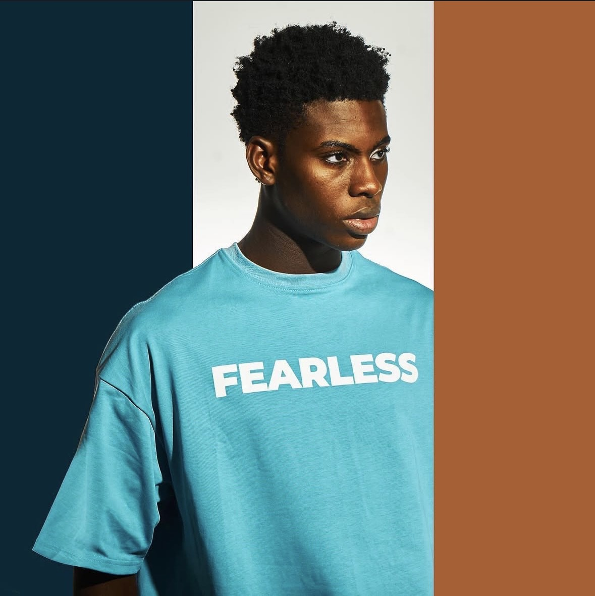
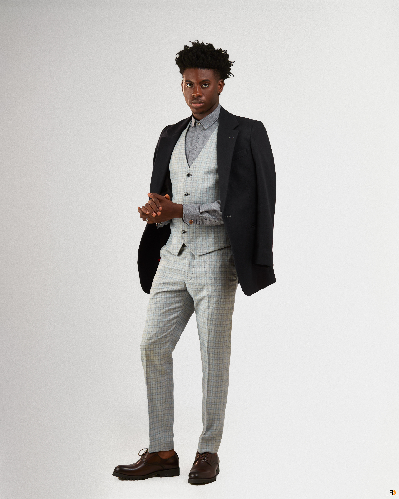

Public credibility
BBNaija S10 Top 3 finalist

Koyinsola "Koyin" Sanusi is a Nigerian model, actor, recording artist and brand campaign talent with a portfolio spanning some of Africa's most recognised names. With over 400 music video appearances to his credit, Koyin has become one of Nigeria's most sought-after faces featured in campaigns for Guinness Africa, Coca-Cola, Flying Fish, Smirnoff, BetKing, Oraimo, American Cola, Verve, UBA, POCO Nigeria and Sonmade_Luxury among others. A Guinness Africa brand ambassador and the official face of Sonmade Luxury, he brings cultural weight and commercial precision to every frame. Beyond the lens, Koyin is an active recording artist his latest single Pressure, a collaboration with JasonJae and Mensan, marks his most recent studio release. His reach extends into live appearances, brand activations and guest engagements across Nigeria's entertainment and lifestyle circuit. Recognised nationally as the "Last Man Standing" following his finalist run on Big Brother Naija Season 10, Koyin is not defined by a single moment he is built on a body of work.
BBNaija S10 Top 3 finalist
AVA People’s Choice Award
Culture-facing and premium
Based in Lagos, Nigeria. Originally from Ogun State.
Creative instincts sharpened early — dance, music and an ease in front of the lens that would become his most bankable asset.
Long before the headlines, Koyin was earning his eye — blocking, pacing, delivering. The kind of on-set discipline that makes campaign directors call back.
Millions watched. What they saw was composure. Koyin didn't chase the moment — he outlasted it, earning the title "Last Man Standing" from a nation paying attention.
Ambassador deals, film credits, a growing studio catalogue and a presence that scales across luxury, FMCG and entertainment. The brief keeps getting bigger.


Editorial, campaigns, commercials
Strong posture in tight frames, early usable takes, and an instinct for brand tone. Built for premium visual standards across fashion, lifestyle and beverage.
For brand films, editorial campaigns, commercials, live appearances or music-led brand moments, reach the bookings team. Long-term partnerships welcome.